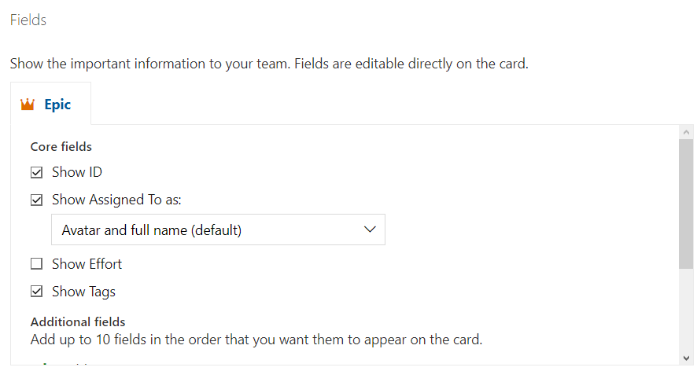

Azure DevOps Boards Cards - Fields Ayarları
"Fields" ayarlarıyla, kartlarda görüntülenen bilgileri ve bu bilgilerin düzenlenmesine izin verilen alanları özelleştirebilirsiniz. Aşağıda, Azure DevOps Boards'daki "Cards - Fields" ayarlarının bazı örneklerini bulabilirsiniz:
- Başlık: Kartların başlık alanını görüntüleyebilir veya gizleyebilirsiniz. Başlık genellikle kartın üzerindeki ana metni içerir.
- Açıklama: Kartların açıklama alanını görüntüleyebilir veya gizleyebilirsiniz. Açıklama, kartla ilgili ayrıntılı bilgileri veya talimatları içerebilir.
- Atanan Kişi: Kartların atanmış kişi alanını görüntüleyebilir veya gizleyebilirsiniz. Bu alan, kartın kimin üzerinde çalıştığını veya sorumlu olduğunu gösterir.
- Öncelik: Kartların öncelik alanını görüntüleyebilir veya gizleyebilirsiniz. Öncelik, kartın önem seviyesini veya işin aciliyetini belirtebilir.
- Etkinlikler: Kartların etkinlik alanını görüntüleyebilir veya gizleyebilirsiniz. Etkinlikler, kart üzerinde yapılan geçmiş değişiklikleri veya yorumları içerebilir.
- İlerleme Durumu: Kartların ilerleme durumu alanını görüntüleyebilir veya gizleyebilirsiniz. Bu alan, kartın tamamlanma durumunu gösterir (örneğin, "Yapılacak", "Devam Ediyor", "Tamamlandı" gibi).
